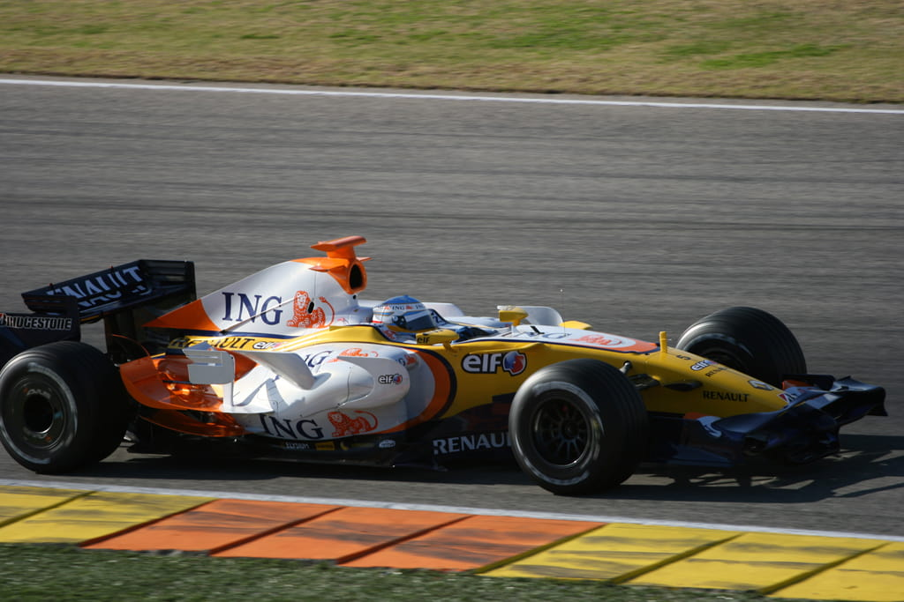

Contacto
Email: fernando.alonso@email.com
Teléfono: +123 456 789
Redes sociales: Twitter, Instagram
Formación
- Escuela de Pilotos de Karting
- Escuela de Conducción Avanzada
Habilidades
- Piloto de Fórmula 1
- Manejo de vehículos de alta velocidad
- Trabajo en equipo
- Resistencia y resistencia física
Acerca de
Experiencia Laboral
Minardi (2001)
Alonso hizo su debut en la Fórmula 1 con el modesto equipo Minardi en 2001. A pesar de las limitaciones del equipo, logró destacar y demostrar su habilidad como piloto, sentando las bases para una carrera exitosa.
Renault (2003-2006)
Durante su tiempo con el equipo Renault, Alonso alcanzó el cenit de su carrera. Ganó dos campeonatos mundiales consecutivos en 2005 y 2006, convirtiéndose en el piloto más joven en lograr este hito en ese momento. Su capacidad para liderar al equipo y su habilidad en pista lo consolidaron como uno de los mejores pilotos de la Fórmula 1.
McLaren (2007)
En 2007, Alonso se unió a McLaren, donde tuvo una temporada llena de controversias. La intensa rivalidad interna con su compañero de equipo, Lewis Hamilton, llevó a situaciones tensas dentro del equipo. Aunque lograron varias victorias, las disputas internas afectaron el rendimiento general del equipo.
Regreso a Renault (2008-2009)
Después de su experiencia en McLaren, Alonso regresó a Renault. Aunque el equipo ya no estaba en la cima de la competición, su regreso demostró su lealtad a la escudería y su deseo de continuar compitiendo al más alto nivel.
Ferrari (2010-2014)
El cambio a Ferrari en 2010 marcó una nueva fase en la carrera de Alonso. Compitió para la Scuderia Ferrari durante cinco temporadas, logrando subcampeonatos en tres ocasiones. Aunque no logró ganar un título con Ferrari, su tiempo con el equipo destacó su consistencia y habilidades de conducción.
Regreso a McLaren (2015-2018):
En 2015, Alonso regresó a McLaren en un intento por replicar el éxito pasado. Sin embargo, McLaren enfrentó dificultades técnicas y problemas de rendimiento, lo que limitó las oportunidades de Alonso para competir al más alto nivel.
Retiro Temporal (2019-2020):
Al final de la temporada 2018, Alonso anunció un retiro temporal de la Fórmula 1. Durante este período, exploró otras categorías del automovilismo y participó en eventos icónicos como las 24 Horas de Le Mans y las 500 Millas de Indianápolis, buscando asi la codiciada "Triple corona".
Regreso con Alpine (2021 - 2022)
En 2021, Alonso hizo su esperado regreso a la Fórmula 1 con el equipo Alpine. Su regreso fue bien recibido por los fanáticos y destacó su compromiso continuo con el deporte y su deseo de seguir compitiendo y en la máxima categoría del automovilismo. En su vuelta tenía la intencion de ganar con el famoso "Plan" pero el decepcionante coche que tuvo y mala situación en el equipo busco otro lugar para hacerlo
Aston Martin (2023 - Actualidad)
El paso de Fernando Alonso en Aston Martin ha sido impresionante, con tres podios consecutivos en las primeras carreras. Su adaptación rápida y rendimiento destacado demuestran su habilidad y determinación como piloto experimentado, elevando el nivel del equipo y generando entusiasmo entre los aficionados.